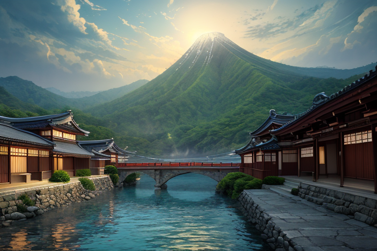
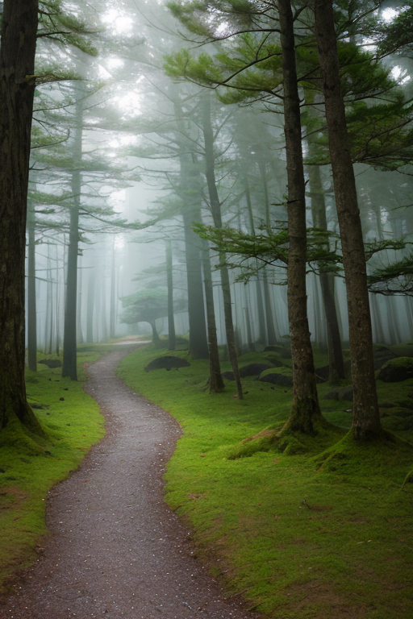
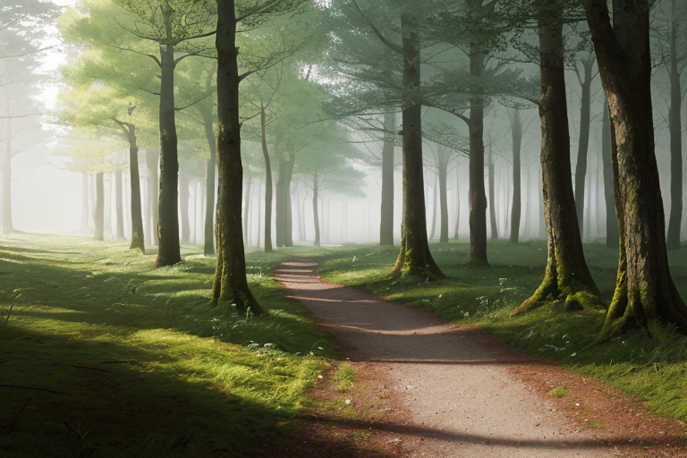
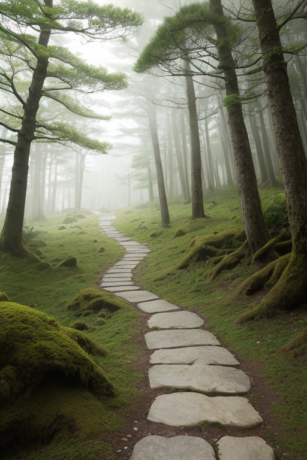
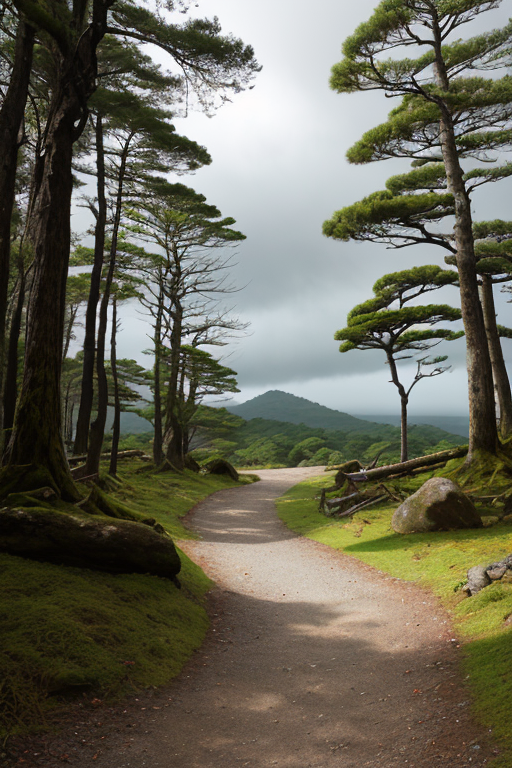

第一章 現実の和歌山
あなたはまだ気づいていない。この土地にも、王がいることを。
熊野古道の石畳は、苔と杉の根に覆われ、千年の巡礼の足跡を飲み込んでいる。那智の滝は轟音を立てて落ち、その水煙が参道を濡らす。高野山の奥之院では、無数の卒塔婆が風に揺れ、過去と現在を結ぶ。ここは聖地であり、常に「道」そのものだった。
その道の上を、今日も人々が歩く。観光客、修行僧、ただの散策者。彼らは知らない。自分たちの一歩一歩が、この列島の「歪み」をわずかに、しかし確かに調整する役目を果たしていることを。紀伊山地の深い地盤は複雑に褶曲し、巨大なエネルギーを蓄えている。それは時に地震となり、土砂となり、人々の平穏を脅かす。
巡礼路の静寂の中、微かな軋みが地中を伝う。次の歪みが、ゆっくりと醸成され始めた。

第二章 歪みの兆候
熊野古道、大雲取越の石畳が、今朝はひどく冷たかった。それは単なる気温のせいではない。地盤深く、歴史の沈殿層が微かに震えている。かつて空海がこの道を踏みしめ、熊野詣の貴族や庶民が祈りを積み重ねた。その膨大な「歩み」の記憶が、地層に刻まれた信仰の波長が、今、何かと共振しようとしている。
キイリア・パスウェイは、杉林に囲まれた路傍の祠に佇んでいた。白と緑の衣が朝霧に溶ける。彼の目は、足元の地面ではなく、そこに重なる無数の時間の層を見つめている。巡礼路は単なる物理的な道ではない。人々の「道を求める意志」そのものが形になったものだ。その意志の流れが、今、澱み始めている。
「道が、苦しんでいる」と、王は呟いた。声には、本来持ち得ないはずの「悲しみ」が滲んでいた。妖精パセラが肩に止まり、優しい光を放つ。それは癒しではなく、共にあるという証だった。
地中の軋みは、単なる地殻変動ではない。人々が「歩むこと」の意味を見失い、道が単なる観光資源に矮小化されていく。その心の「歪み」が、地質の歪みと呼応する。古道の脇で、老いた杉の根元に、ごくわずかな亀裂が走った。

第三章 王の葛藤
熊野古道の石畳が、微かに震えた。巡礼王キイリアは、その震えを掌で受け止めた。地中の軋みは、物理的なものだけではない。人々の祈りが薄れ、道が「通過点」と化すことへの、古道そのものの嘆きだった。
「止めるべきか」とパセラが問うた。王は首を振った。「否だ。歪みは止められぬ。我々が為すべきは、調整である」。しかし、その調整とは何か。古道を守るために、人の流れを変えることか。それとも、この苦しみを以て、人々に「道」の意味を思い出させる契機とすることか。
王は目を閉じた。慈悲とは、苦しみを取り除くことだけではない。苦しみの先にある「気づき」へと導くことも、慈悲なのだ。地鳴りは増幅する。王は決断した。揺れそのものを弱めるのではなく、揺れが起きる「場所」と「時」を、ほんの少しだけ調整する。古道の最も強靭な部分で受け止めさせ、その軋みを、山全体に響かせる。それは警告の鐘となる。
「道は続く」と王は呟いた。「だが、その歩み方は、選ばねばならない」。

第四章 妖精との対話
古道の軋みは、山肌を伝い、高野山の伽藍をかすかに揺らした。パセラは、その振動を足の裏で感じながら言った。
「王よ、この調整は危険です。歪みを特定の一点に集中させることは、古道そのものへの負担を増します。信仰の流れが、乱れるかもしれません」
その声は、いつにも増して悲しみを帯びていた。
「わかっている」と王は答えた。「だが、今このままでは、歪みは麓の集落へと真っ直ぐ向かう。ここで受け止め、山全体に警告として響かせることこそが、『導き』だ」
クマノアが、杉の古木の根元から現れた。その目には、長い年月で古道が幾度も修復されてきた記憶が宿っている。
「道は続きます。しかし、時には迂回し、時には補強しなければ。このままの歩みでは、いつか道そのものが保たなくなる。変革は、道を続けるための、もう一つの形です」
パセラは深く息を吸い、梅干しの古木を見上げた。酸っぱさと深い味わい。それは、単なる保存食以上のものだった。
「……では、私も道を守ります。この苦しみの先に、気づきがあるのなら」

第五章 微調整と余韻
紀伊半島の歪みは、静かに、しかし確実に蓄積していた。それは巡礼路の分岐点のように、複数の断層が一点に集まる地点で生じようとしていた。キイリアは、友ヶ島の砲台跡に立った。ここで歪みを解消すれば、内陸部の大きな揺れは避けられる。だが、そのエネルギーは海へと向かい、小さな津波を生む。彼は感情を持たぬはずの王だった。今、その胸に去来するのは、慈悲という名の重さだ。
「道を続けるために、迂回を選ぶのです」
パセラが囁いた。クマノアが古道の杉々に触れ、信仰の流れを一時的に迂回させた。キイリアは白と緑の光を放ち、歪みのエネルギーを、丁度潮の満ち引きが重なる方向へと微調整した。
地震は起きた。震度は一歩手前で収まった。海には波が立ったが、それは多くの命を奪うほどの規模にはならなかった。代償は、熊野古道の一部が崩れ、数本の古い杉が倒れたことだ。歴史の流れは、ほんの一度だけ曲げられた。救われた命の数と、失われた道の記憶。その両方を、キイリアは今、初めて「悲しみ」として背負う。
崩れた道の脇で、巡礼者は立ち止まり、新たな迂回路を見つけ出した。道は、形を変えて、続いていく。
あなたの町にも、王がいる。